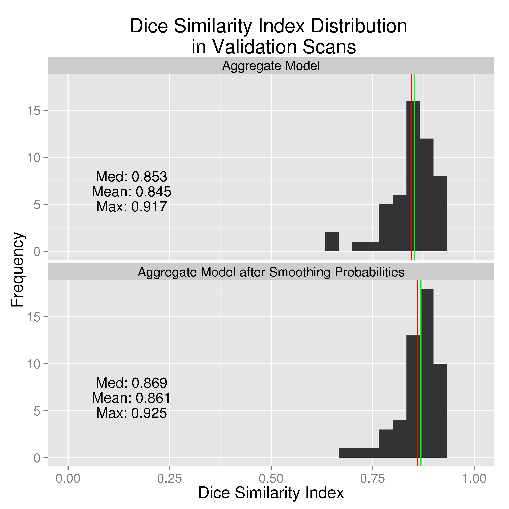

- We have patients with Intracerebral Hemorrhage and CT Data
- Problem: Manual Segmentation of Intracerebral Hemorrhage is costly
- We propose an automated solution using logistic regression
January 13, 2015
Logic of the Talk
What is Intracranial hemorrhage?
- When a blood vessel ruptures into
- tissue: intracerebral hemorrhage (ICH)
- ventricles: intraventricular hemorrhage (IVH)
- ≈ 13% of strokes

http://www.heartandstroke.com/site/c.ikIQLcMWJtE/b.3484153/k.7675/Stroke__Hemorrhagic_stroke.htm
X-ray Computed Tomography (CT) Scans


Data Used
| Overall | |
|---|---|
| Age (Mean (SD)) | 60.66 (11.25) |
| Gender = Male (%) | 77 (68.8) |
| Race (%) | |
| Caucasian | 60 (53.6) |
| African American | 35 (31.2) |
| Hispanic | 12 (10.7) |
| Other | 5 ( 4.5) |
| Diagnostic ICH Volume (Mean (SD)) | 37.74 (20.24) |
| Diagnostic IVH Volume (Mean (SD)) | 3.23 (6.28) |
CT scans from MISTIE (Minimally Invasive Surgery plus rt-PA for ICH Evacuation) trial.
- 112 scans from 112 patients (1 per patient)
- First scan patient received used

Image Representation: voxels (3D pixels)


CT scan Characteristics
- Data are in Hounsfield Units (HU), which are "standardized" \[ HU(v) = 1000 \times \frac{\mu(v) - \mu_{\text{water}}}{ \mu_{\text{water}}- \mu_{\text{air}}} \] where \(\mu\) is the linear attenuation coefficient and \(v\) denotes voxel.
CT scan Characteristics
HU Ranges:
- Bone – high intensity (1000 HU)
- Air – low intensity (-1000 HU)
- Water - 0 HU
- Blood 30-80 HU
- White/Gray Matter ≈ 0 - 100 HU
Intracerebral Hemorrhage: Segmented


Larger ICH Volume ⇒ Worse Outcome
J. P. Broderick, T. G. Brott, J. E. Duldner, et al. "Volume of intracerebral hemorrhage. A powerful and easy-to-use predictor of 30-day mortality." In: Stroke 24.7 (1993), pp. 987-993.
S. Davis, J. Broderick, M. Hennerici, et al. "Hematoma growth is a determinant of mortality and poor outcome after intracerebral hemorrhage". In: Neurology 66.8 (2006), pp. 1175-1181.
L. C. Jordan, J. T. Kleinman and A. E. Hillis. "Intracerebral hemorrhage volume predicts poor neurologic outcome in children". In: Stroke 40.5 (2009), pp. 1666-1671.
S. Tuhrim, D. R. Horowitz, M. Sacher, et al. "Volume of ventricular blood is an important determinant of outcome in supratentorial intracerebral hemorrhage". In: Critical care medicine 27.3 (1999), pp. 617-621.
Problems with Manual Segmenation
- ICH are manually traced (gold standard)
- Time-consuming (can be over 20 mins per scan), costly
- Within and across-rater variability
- Infeasible for large databases
Solution: Primary Intracerebral Hemorrhage Prediction Employing Regression and Features Extracted from CT (PItcHPERFECT)
PItcHPERFECT uses Logistic Regression
Let \(Y\) be the binary 0/1 indicator if a voxel \(j\)is classified as ICH, \(1\dots v_{i}\) for person \(i\).
\[
\text{logit}\left(Y_{i, j}\right) = \beta_0 + X_{i, j}\beta
\] where \(X_{i,j}\) is a \(v_{i}\times p\) matrix of predictors and \(\beta \in \mathbb{R}^p\).
- Note, we do not take into account the spatial dependence of voxels.
- This model may be fit on a person level (where \(i\) is fixed), or across people \(i\) varies.
What are the predictors?
After some preprocessing and voxel selection, the predictors \(X\) are
- Intensity in HU (Raw image)
- Indicator if intensity \(\geq 40\) & \(\leq 80\) HU (thresholded)
- Z-scores in all 3 planes with only brain image
- Distance from the center of the brain
- Local moments (mean, sd, skew, kurtosis) of intensity and thresholded intensity
- Smoothed image with large Gaussian smoothers (\(\sigma \in \{10, 20\}\)mm)
Estimation of Model
- Built the Model based on 10 subjects (first 10, not randomly)
Data were stratified sampled based on \(Y\) and a fixed percentage (25%) of positive outcomes were included, and cutoffs were optimized on the 10 scans
Split the remaining subjects into \(51\) validation scans and \(51\) test scans and predicted \(Y_{i,j}\).
We will present results on the \(51\) validation scans.
Assessing Performance
For each scan we can calculate the following 2-by-2 table and a corresponding Venn diagram:
| Manual | |||
| 0 | 1 | ||
| PitCH | 0 | TN | FN |
| 1 | FP | TP | |

Dice Similarity
From this table, we can calculate the Dice Similarity Index (DSI): \[
\definecolor{red}{RGB}{255,0,0}
\definecolor{blue}{RGB}{0,0,255}
\definecolor{purple}{RGB}{128,0,128}
\definecolor{blac,}{RGB}{0,0,0}
\frac{ \color{purple} 2 \times \# \text{TP} }{ \color{purple} 2 \times \#\text{TP} \color{black} + \color{red} \text{FN} \color{black} + \color{blue} \text{FP}}
\]
A DSI of:
- 0 indicates no overlap
- 1 means perfect agreement

Test case: Manual Segmentation

Example Output: Automatic Segmentation

Prediction Comparison: DSI: 0.90


Thanks
Prediction Comparison: DSI: 0.686

Demographics of Patients
| Overall | |
|---|---|
| Age (Mean (SD)) | 60.66 (11.25) |
| Gender = Male (%) | 77 (68.8) |
| Race (%) | |
| Caucasian | 60 (53.6) |
| African American | 35 (31.2) |
| Hispanic | 12 (10.7) |
| Other | 5 ( 4.5) |
| Diagnostic ICH Volume (Mean (SD)) | 37.74 (20.24) |
| Diagnostic IVH Volume (Mean (SD)) | 3.23 (6.28) |
Data from the MISTIE (Minimally Invasive Surgery plus rt-PA for ICH Evacuation) trial.
- Patients with ICH at presentation
- 112 patients from 112 scans